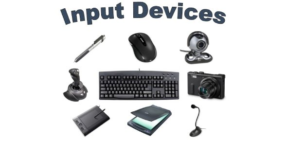

An Input Device is piece of hardware used to provide data to a computer for interation and control. It turns inputs into zeros and ones for the computer to read. Common Input Devices are keyboard and mouse.
An Output device is a piece of computer hardware equipment which converts zeros and ones into a readable form for humans(text, graphics, audio etc). Some examples of Output Devices are, monitors, speakers, and printer.
The CPU is the primary component of a computer that processes instructions, it does the calculating, sorting and searching. Anything done on the computer, will be processed by the CPU. The CPU contains an ALU, and a control unit.
The ALU is a digital circuit used to perform Arithmetic and logic operations(addition, subtraction, multiplication, and division). It's the fundamental building block of the CPU, or GPU.
The Control Unit is the main component of a CPU that directs the operation of the processor. It tells the computer's memory, ALU and Input and Output Devices how to respond to data.
RAM is a high speed storage that the computer and its applications use to store and access temporary data. Anything that is currently running, like open files, are all stored in RAM.
Optical Memory is any type of storage in which the data is written and read with a laser. Examples are compact discs, such as CDs and DVDs.
Magnetic Memory is the main way data is being stored on magnetic medium. Hard drives, the device people use to store document audios and videos, use Magnetic Memory. This type of memory has a longer life span, and a larger capacity than Optical Memory.
Flash Memory is a long life and non-volatile storage chip that is widley used in embedded systems. It can keep stored data even when there's no power. Which is why it is commonly used in portable devices.
Logic Gates is an electronic circuit with one or more input, but only one output. It is the basic building block of any digital system, it performs basic logical funtions. Logic Gates are used in microcontrollers, microprocessors, and electronics.